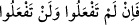

içindir.
Ayrıca “Eğer doğru sözlüler iseniz,” ifâdesinde “ (eğer)” kelimesinin kullanılması,
onların iddiâlarının bâtıl olduğunu ifâde etmenin yanı sıra bu iddiâlarında onları alaya
almağa da bir işâret vardır.
50. Eğer sana cevap veremezlerse, bil ki onlar, sırf heveslerine uymaktadırlar.
Allah’tan bir yol gösterici olmaksızın kendi hevesine uyandan daha sapık kim
olabilir! Elbette Allah zalim kavmi doğru yola iletmez.
“Eğer sana cevap veremezlerse,” yâni bu iki kitaptan daha iyi hidâyete götüren bir
kitap getirme çağrısına icâbet edemezlerse, ki asla icâbet edemeyeceklerdir, şeklindeki
üslûbu, “ (Bunu yapamazsanız (bir sûre getiremezsiniz) -ki elbette
yapamayacaksınız (getiremeyeceksiniz),-” (el-Bakara, 2/24) âyetindeki ifâde ve
üslûba benzer.
Bu fiilin mefûlü olan “ (senin çağrına)” kelimesi bilindiği (mâlum olduğu) için
hazfedilmiştir. Çünkü “ (cevap verme ya da isteme)” fiilinin bizzat kendisi “(çağrı)” anlamı taşır. “” deki lâm harf-i cerri ise fiilin “ (dâvet eden)”kelimesine
geçişini (ta’diyesini) sağlar ve bu durumda “ fiilinin mefûlü olan “ (senin
çağrına)” kelimesi genellikle hazfedilir.
“Bil ki onlar, sırf” hevâ ve “heveslerine uymaktadırlar.” Kendilerinin asla bir
temessük edeni olamayacak sapık hevâ ve heveslerinin peşindedirler. Çünkü böyle
olmasaydı, daha iyi hidâyete sevkeden bir kitap getirmeleri gerekirdi. “Allah’tan bir
yol gösterici,” bir beyan ve bir huccet “olmaksızın kendi hevesine uyandan daha sapık
kim olabilir!”
Bu soru (istifham), inkârîdir ve nefiy mânâsınadır. Yani, o kimseden daha sapık kimse
yoktur; sapıkların en sapığıdır, demektir. Burada hevâya uymanın “Allah’dan bir yol
gösterici olmaksızın” şeklinde sınırlandırılması, saptırma (tadlil) ve kötüleme
(teşnî)de anlatımın hakkını vermek içindir. Aksi halde Allah Teâlâ’nın hidâyeti ile
hevâya uymak apaçık muhâl bir şeydir.
Bazıları demiştir ki: Hevâ nefistir ve bazan ona uymak gerçeğe (hakka) uygun
düşebilir. Bu yüzden “hevâ”yı, “Allah’dan bir yol gösterici olmaksızın” diye sınırladı
ve hâl makamında geldi.
“Elbette Allah zâlim kavmi doğru yola iletmez.” Onları dînine irşâd etmez. Onlar ki,
hevâya uymakla ve aşırı gitmekle nefislerine zulmetmişler, apaçık hakîkata götüren